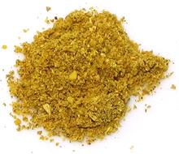

 |
Sambar Podi #2India - Sambar Podi | ||||
| Makes: Effort: Sched: DoAhead: |
1/2 cup ** 20 min Yes |
Sambar Podi (Sambar Powder) is the basic seasoning for sambars, one of the signature dishes of Southern India. See also our Sambar Podi #1. | |||
| Sambars are dal based first course dishes that appear at most meals in the vegetarian cuisines of Southern India, but you don't have to be a vegetarian to enjoy them. | |||||
|
----- 1/2 1/4 1/2 1/4 1/4 1 1/4 1/4 ----- 10 1 1/2 1/4 |
--- T c T t t T t c --- in T t |
-- Toasted Cumin seeds Coriander seeds Black Peppercorns Fenugreek seeds Mustard seeds, black Chana Dal (1) Poppy seeds, white Red Chili, dry (2) ------------- Curry leaves (3) Cinnamon stick Coconut, dry Turmeric powder |
Make - (20 min)
|